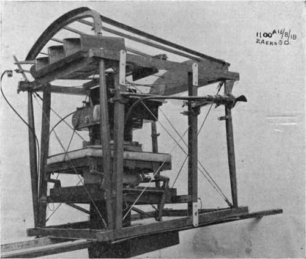
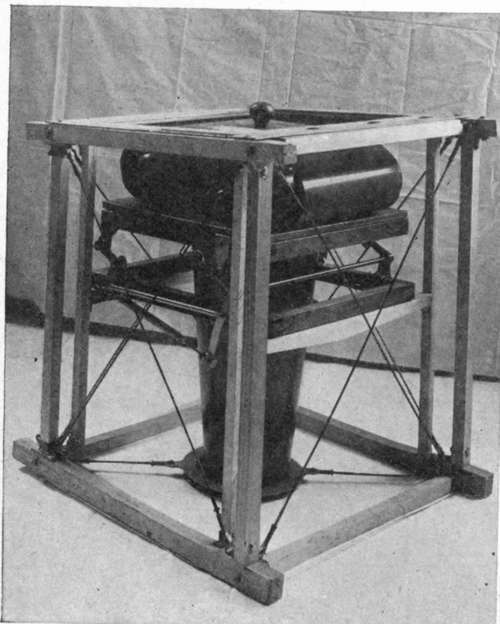
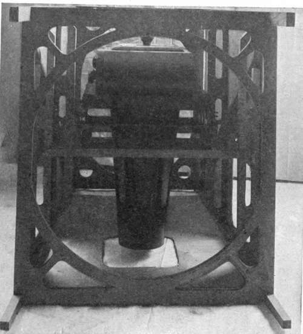
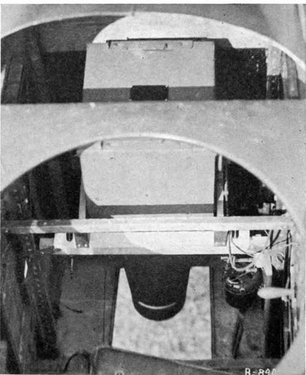

Practical Solutions For Problems In Installation Of Cameras And Mountings In Planes
Description
This section is from the book "Airplane Photography", by Herbert E. Ives. Also available from Amazon: Airplane photography.
Practical Solutions For Problems In Installation Of Cameras And Mountings In Planes
An important feature of camera installation has already been mentioned, but may well be repeated for emphasis. The camera and its anti-vibration mounting should always be considered as a unit, and should be so designed that simple bolts or straps will suffice to fasten it in its place in the plane. Even should the spacing of the structural parts of the plane not correspond to that anticipated by the mounting design, the ingenuity of the man in the field may be depended upon to make the necessary alterations or additions to the plane. The design of the camera suspension itself cannot, however, be left to uneducated ingenuity.
Assuming the camera and mounting supplied, the next step—a very difficult one—is to insure uniformity in the structures to be built into the planes for the purpose of supporting the camera mountings. With this uniformity must, however, be combined the greatest possible flexibility to provide for various designs of cameras.
In the English service the standard camera installation consists of wooden uprights with cross bars athwart the plane, adjustable as to height (Fig. 95). A distance between the cross bars of 1334 inches has been standardized, and all camera cradles and mountings are notched or otherwise spaced to fit this dimension. The installation adopted in the American planes is similar, but with a distance of 16 inches between cross bars. These uprights and cross bars are ordinarily situated in the bay behind the observer, but can be placed in any available space. Fig. 83 shows, in a model bay, the arrangement of uprights and cross bars in the American DH 4, with the L camera in place in its cradle. It is just possible to introduce camera and cradle separately from the observer's cockpit through the tension wires, and, by uncomfortable reaching, magazines may be changed.
Fig. 95. - "L-B" camera with 20-inch lens, mounted on bell-crank suspension in skeleton fuselage. Stream-lined hood below to cover projecting end of lens cylinder. Propeller and Bowden release in place.
A step in advance is made when the top tension wires and superstructure are replaced by a rigid frame with an opening large enough to admit the entire camera and mounting. When this is done considerably larger cameras may be accommodated in the same sized bay, as shown in Fig. 96. A further advance, from the standpoint of accessibility and convenience of installation, follows when the tension wires between observer's and camera bay are replaced by a plywood ring, as shown in Fig. 97. Here the only serious limitations are those due to the vertical height of the camera, and of course its weight.
Fig. 96. - U.S. type "K" film camera on bell-crank mount, in camera bay of deHaviland 4. Veneer frame at top of bay in place of usual cross-wires.
Fig. 97. - Section of fuselage of veneer construction affording superior accessibility to camera.
Openings for the lens to point through are simply provided in the fabric covered aircraft, by cutting through the canvas and stiffening the edge of the hole by wire. Tension wires are often in the way. They may either be disregarded, since they merely cut off a little light, or replaced in part by metal rings, as shown in Fig. 96. In veneer covered fuselages the hole must of course go through the wood. This may be undesirable, since the veneer is depended on to furnish structural strength, a point which further emphasizes the importance of the photographic requirements being thoroughly considered while the plane is being designed.
Single seater or scout planes do not lend themselves to the insertion of such standardized uprights and cross-pieces, because of their small size and the common utilization of all space inside the fuselage for gasoline tanks and control wires. Some French scouts, whose fuselages are very wide, due to the rotary engines, have been fitted with compartments for contemplated automatic film cameras. The most commonly used camera in the single seater was, however, the Italian 24-plate single-motion apparatus (Fig. 49). This camera and its carrying tray occupy very little lateral space and have in actual practice been carried beneath the seat or pushed up through an opening in the bottom of the fuselage under the gasoline tank. Whatever criticism may be made of the adequacy of the mounting, it must be said that the camera, as used, is perhaps the most eminently practical of all developed in the war, as its use on scouts testifies.
Special Photographic Planes
As cameras grew in size, the difficulty of installing them in planes built without regard to photographic requirements greatly increased. Few planes could carry even the 50 centimeter focus camera obliquely without the necessity of poking its nose through the side where it would catch wind and oil; while the 120 centimeter camera could be carried obliquely only in the fore and aft position. Even vertical installation of the latter camera was really feasible in but few planes; sometimes the camera was carried to the exclusion of the observer—and, in fact, this size was never used by the English, whose fuselages were small in cross-section.
This situation led, late in the war, to steps toward producing planes designed primarily for photographic reconnaissance. In these the camera would be entirely accessible, and cameras of any size could be carried in any desired position. One scheme which properly belongs under this heading was the provision of a special removable photographic cockpit, for the front or nose of a twin-motored three seater. Other noses, for bombing and heavy machine guns, were also planned, all to be interchangeable. Since the regular photographic bay with uprights and cross-pieces was also provided to the rear, this special photographic ship could on occasion do two classes of work, such as long focus spotting and short focus mapping.
The most completely worked out photographic plane was probably the model designated Pi by the United States Air Service. This is a modified de Haviland 4 in which the rear controls have been removed and the cowling raised and at the same time made squarer in cross-section. The space formerly occupied by the rear controls provides ample room for all types of camera. These are carried on uprights at the standard distance apart, 16 inches, with cross-pieces adjustable as to height. The camera space is accessible not only from the observer's cockpit, but from above, upon folding back the metal cover. Doors at the bottom and at each side permit not only vertical but oblique exposures. The latter are not interfered with by the wings, as they would be in some designs of plane if the camera occupied the same position relative to the cockpits. Fig. 91 shows the deRam camera in place, as seen from the rear. Figs. 98 and 99 show the 18X24 centimeter film camera, set both for vertical and oblique views.
Fig. 91. - U. S. deRam camera and mount installed in photographic deHaviland 4 (Fig. 100). Viewed from above the observer's cockpit.
Negative lenses are provided for both pilot and observer, the one for the pilot permitting him to see from a point far ahead to directly underneath, while the observer's is furnished with cross wires below and etched rectangles of the camera field sizes on the upper surface. Windows of non-breakable glass assist in sighting obliques. The accompanying picture (Fig. 100) of the plane showing an oblique camera in position gives an excellent idea of its appearance. Its special features are worthy of copying in peace-time photographic aircraft.
Continue to:
- prev: Chapter XVI. The Installation Of Cameras And Mountings In Planes. Conditions To Be Met
- Table of Contents
- next: Installation Of Auxiliaries
Tags
camera, lens, airplane, aerial, film, exposure, photography, maps, birdseye